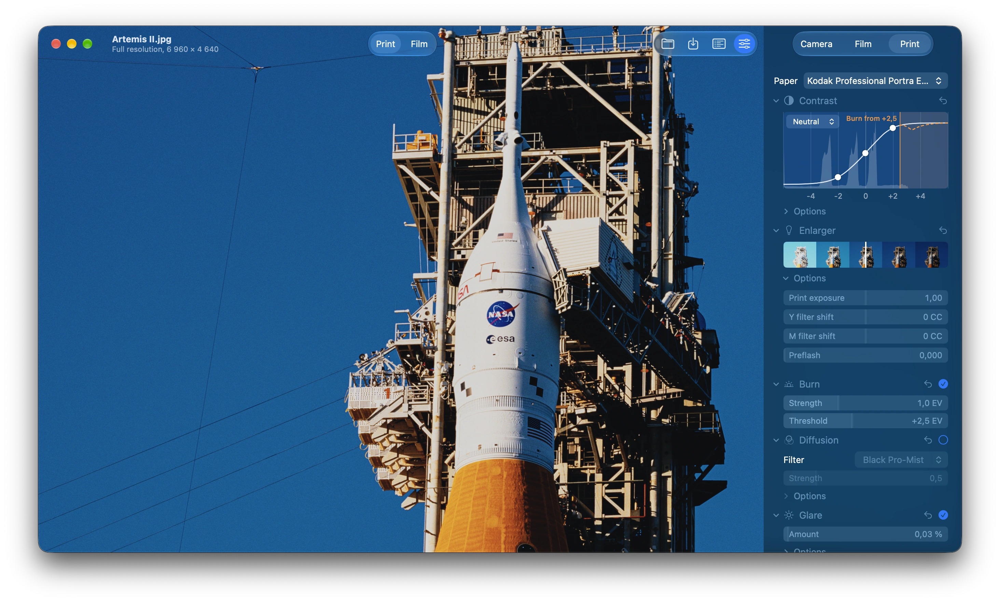
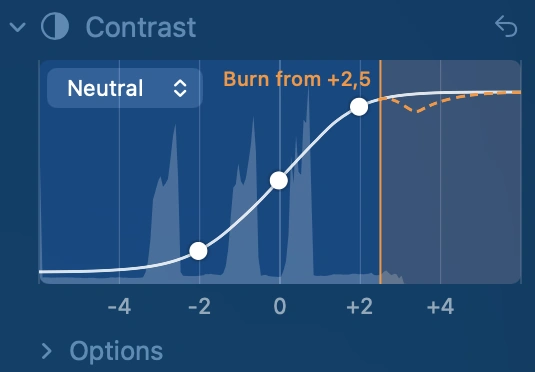

Your photos, through colour film.
SpektraMac simulates film the way a darkroom makes it: exposed, developed, printed and scanned, from each film's measured spectral data. Native to the Mac, on its GPU.

Choose a film. Watch it print.
Drag across the frame to compare it with the original. Each one is the whole simulation: exposure, development, a print on paper or the slide itself, and the scan.
Artemis II at Launch Pad 39B. NASA/Sam Lott, public domain.
Fast enough to edit live.
The whole simulation, grain and halation included, runs on the GPU. Timed on a MacBook Pro with an M1 Pro and 16 GB, against the Python Spektrafilm 0.3.4 it ports, with the same film, paper and settings.
faster than Python on a full render of the same photo
for the live preview after each change, against 4.1 s
for a 24-megapixel photo with every effect, which Python can't render in 16 GB
| RENDER | PYTHON SPEKTRAFILM 0.3.4 | SPEKTRAMAC |
|---|---|---|
| Full, 2400 × 1600 | 18.5 s | 70 ms |
| Preview, 1600 × 1067 | 4.1 s | 20 ms |
| Full, 6000 × 4000 (24 MP) | Stopped after 10 minutes, using over 33 GB | 0.41 s |
| Full, 6960 × 4640 (32 MP) | – | 0.58 s |
Kodak Portra 400 printed on Kodak Portra Endura, with grain, halation, couplers and glare; the previews
in preview mode (no grain or blurs) on both; the best of several runs. Time it on your own photo with
swift run -c release --package-path Engine spektra-cli benchmark photo.jpg.
Every control is part of the darkroom.
SpektraMac ports Spektrafilm, Andrea Volpato's simulation of colour film, to Swift and Metal. Each setting changes something physical: the light, the film or the paper.
Shape the print by hand.
The tone graph shows your photo's tones and how they print. Drag the middle point for the print's exposure, and the points either side for the contrast of the shadows and the highlights. Turn on the burn, and the tones it darkens are shaded in orange.

20 films, 8 papers.
Colour negatives, slides and motion picture film, from Portra, Ektar and Gold to Velvia, Kodachrome and Vision3, printed on Kodak and Fujifilm papers, or viewed as film.
Metered like a camera.
Expose for the whole frame, or for the faces, people or objects it finds. Rebuild clipped highlights, and put a Pro-Mist or a CineBloom on the lens.
Halation, couplers, grain.
The red glow off the film base, the chemistry behind film's saturation and edge contrast, and grain from silver halide particles.
A printer's tools.
Enlarger exposure and colour filters, preflash, paper contrast, a burn for bright skies, a diffusion filter on the enlarger and glare on the print.
See it before you choose.
A preview in about 20 ms while you drag. Point at a film in its menu to see it on your photo, or click the photo for the original.
Your files, in wide colour.
Opens camera RAW, HEIC, JPEG, TIFF and PNG. Saves JPEG, or 16-bit TIFF and PNG, in Display P3 with the edit recorded in the file. Keeps presets and exports 3D LUTs.
Tested against the original.
The port is checked stage by stage against the Python Spektrafilm 0.3.4: every step of the pipeline, for negatives, slides and motion picture film, on a test chart and on a photo. Where the Mac takes a faster route, such as Apple's blurs, the difference is measured and kept small.
Free, open source, yours to build.
There's no download yet. On a Mac with macOS 26.5 or newer and Xcode 27, it takes a few minutes.
-
01
Clone the repository and open the project:
git clone https://github.com/nainajnahO/SpektraMac.git open SpektraMac/SpektraMac.xcodeproj
-
02
In the SpektraMac target's Signing & Capabilities, choose your own team, or Sign to Run Locally.
-
03
Choose Product › Run (⌘R).